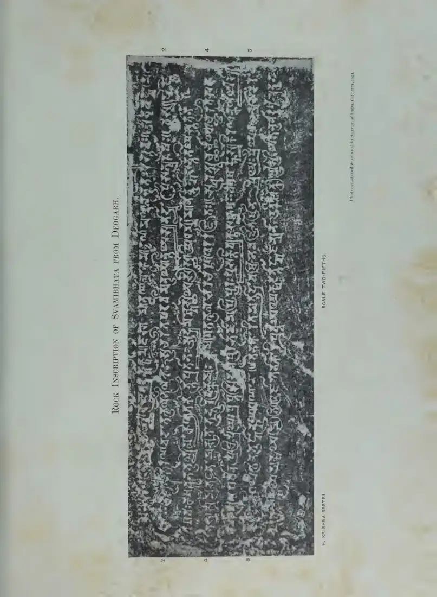

No. 15.—DEOGARH ROCK INSCRIPTION OF SVAMIBHATA.
BY DAYA RAM SAHNI, RAI BAHADUR, M.A.
The antiquities of Deogarh situated about 22 miles from Lalitpur in the district of Jhansi are described in Dr. Führer's Monumental Antiquities and Inscriptions in the North-Western Provinces and Oudh, pp. 119-121 and 333, Mr. P. C. Mukherjee's Report on the Antiquities in the District of Lalitpur and General Cunningham's Archæological Survey Reports, Vol. X, pp. 100-110. The ancient fort at Deogarh is designated Luachchhagira in the Deogarh pillar inscription of Bhōjadēva of Kanauj, Vik. Samvat 9191 while the Deogarh rock inscription of Kirtivarman of the [Vik.] year 1154 gives it the name of Kirttigiri.2
This inscription is engraved on a much-worn rock-cut flight of steps which led down on the south side of the Deogarh Fort to the water of the river Betwā which encloses it on three sides. This flight of steps is locally known as the Nahar or Nār Ghāṭi and possesses as many as eleven niches all contemporaneous with the Ghāṭ some of which still contain their images. The panel occurring at the top of the Ghāṭ, with which we are here concerned, contains a row of nine seated figures which represent, beginning from the left:—(1) A male figure holding a rīṇa between both hands, probably Virabhadra, (2) Brāhmi with three faces, (3) Māhēśvari seated on a lion and holding Gaṇēśa in her left hand, (4) Kaumāri on her peacock, (5) Vaishṇavi on the Garuḍa, (6) Vārāhi, (7) Indrāṇi, (8) four-armed Chāmuṇdā, seated on a human corpse and (9) two-armed Gaṇapati.
The inscription under description is engraved immediately above this panel of the divine Mothers. The inscribed surface is 1' 11" wide and 1' 1" in height. The inscription consists of seven lines and is in a fairly good condition of preservation though six letters in the beginning of the first line and a few letters in the beginning of each of lines 5—7 are mutilated. The characters which belong to what Dr. Bühler styles the "acute-angled alphabet" of Northern India, are closely allied to the alphabet in which the Bōdh-Gayā inscription of Mahānāman of the Gupta year 2693, the Praśasti4 of the temple of Lakhā Maṇdal at Mādhā in Jaunsār Bāwar Pargana of the Dehra Dun District, the Benares inscription of Pantha5 and several other documents are written. The striking peculiarities of this alphabet are the highly ornamental kōṇas and mātrās and these are fully shared by the epigraph under discussion. Dr. Bühler assigns the Lakhā Maṇdal praśasti6 to about the end of the 6th century A.D. In my paper on the Benares inscription of Pantha referred to above I assigned that document erroneously to the beginning of the 8th century A.D. In reality it must be as early as the other inscriptions referred to. This is obvious, besides other considerations, from the use of the archaic form of y consisting of the loop and two vertical lines. This form of y is also used throughout in the present inscription, and I feel no hesitation in assigning it to the 6th century A.D. The language of the document is Sanskrit and except for the opening words Om namaḥ at the beginning of line 1, the inscription is in verse throughout. In the matter of spelling and sandhi, only one or two irregularities are observable in our inscription. One of these is the use of prāptāns=tridaśa instead of prāptāns=tridaśa in line 5. Similarly although the doubling of consonants in contact with r after vowels is quite regular, the form kkramāgata (1. 4) in the beginning of the third quarter of v. 4 is objectionable, as the consonant k concerned
1 Epigraphia Indica, Vol. IV, p. 309 seq.
2 Indian Antiquary, Vol. XI, pp. 311 ff. and Vol. XVIII, pp. 237 ff.
3 Fleet, Gupta Inscriptions, Pl. XLI, A.
4 Epigraphia Indica, Vol. I, p. 10 seq.
5 Ibid, Vol. IX, p. 59 and Pl. facing p. 60.
6 Indian Palæography, edited by Dr. Fleet as an Appendix to the Indian Antiquary, Vol. XXXIII, p. 49.
is not preceded by a vowel. The word prathi in l. 5 is not found in dictionaries. It is probably the engraver's mistake for pathi, locative singular of pathin, meaning 'range', 'reach', etc.
The inscription does not appear so far to have been published anywhere. Its existence is referred to by Mr. P. C. Mukherji1 but all that he has to tell us about it is that in it "the name of the reigning king is lost." Dr. Führer appears, however, to have deciphered a part of the inscription as he has the following remark about it. "Near the Naharghātī, there is a valuable record of Svāmibhata, dated Samvat 609, written in characters of the latter Gupta period."2 Now, though the first part of the remark is quite correct, there is no trace of a date anywhere to be seen in the inscription.
The inscription consists of seven verses. The verses are not numbered. The interpunctuation is also not regular, for though the ends of the verses are everywhere marked by the usual double vertical stroke (daṇḍa), the half verses are only occasionally indicated by a curved horizontal stroke which in one or two cases has a more complicated form. As to the contents of the document, the first verse invokes the blessing of the divine Mothers. Verses 2 to 4 contain the pedigree of a certain Svāmibhata whose high qualities are enlogised in verse 5. The next verse states that this Svāmibhata caused an imperishable abode to be constructed for the divine Mothers on the mountain on which the Deogarh Fort is situated. The Praśasti was composed by a certain Jāta, the son of Yakshadatta and engraved by Bhānu, the son of Durgga. The abode of the Mothers whose erection is recorded in this epigraph is probably identical with the niche in which the group of the seven mothers and the inscription are engraved unless we are to suppose that the upper part of the flight of stops was originally covered with a roof and did duty as a temple. The building of temples for the worship of the divine Mothers appears to have been common in ancient times. One such temple was erected by a certain Mayūrākshaka, a minister of Viśvavarman,3 in the year 480 of the Mālava era, i.e. the Vikrama era.
Nothing is known about the donor (Svāmibhata) mentioned in this inscription from any other source. In the inscription he is described as the grandson of Gōmilaka who was an ornament of the Solar race and might therefore have been a man of some consequence.
TEXT.
[Metres: Vv. 1, 4, 6 and 7, Auushṭubh; V. 2, Āryā; V. 3, Sālinī; V. 5, Śikhariṇi.]
1 [श्रीं न]मः ।
. . . . स्थानां जगद्रक्षाक्षमौजसां
मातृणां लोकमातृं(तृ)णां मण्डलं भूतयेस्तु वः ॥[१*]
अभवहोमि[ल-
2 क] इति [सह*स]किरणावदातकुलतिलकः ।
सुचरितपदवीमनुयान्ति यस्य नाद्यापि सत्युरुषाः ॥[२*]
तस्माज्जन्ने
1 Report on the Antiquities in the District of Lalitpur, Vol. I, p. 11.
2 The Monumental Antiquities and Inscriptions in North-Western Provinces and Oudh, p. 333.
3 Fleet, Gupta Inscriptions, p. 74.
4 The letter ¥ is written below the line.
Plate 1 is bound after this page.
3 केशवः केशवेन तुल्यो लोके स्थातकीर्त्तिप्रतानः[*]
आद्ये मार्गे स्थेयसीं स्थायिधर्मा मानोत्तुङ्गां सन्ततिं यस्ततान ॥[३*]
4 तस्य स्वामिभटो नाम मुतोभूङ्करिविक्क्रमः [*]
क्रमागतकुलाचारचारुशेखरराजितः ॥[8*]
स्फुरत्सच्छच्छायाच्छुरितसक-
5 [लाशा]न्मुख1प्रधान्
प्रथि2प्रायः प्राप्तान्वि[द]शपुरभाजामपि पुरः [*]
प्रसक्तिव्यक्तः सउच्छश्च इव शशाङ्गस्य किरणा-
6 न्कलियंस्या-
[गग्यान्स्थ]गयति न तुङ्गान्गुणगणान् ॥[५*]
तेन कारितमत्ताद्रावर्थिनेवार्चितार्थिना ।
प्रेयः प्रिय3प्रसादानां
7 मातृणां क्षयमक्षयमिति ॥[६*]
जातेनाकारि पूर्वेयं यक्षदत्ताङ्गजन्मना
उत्कीर्णीत्कोर्षसुधिया भातुना दुर्गसूतुना ॥[७*]
TRANSLATION.
Ôrn Salutation !
(Verse 1). May the group of Mothers, the mothers of the universe having their dwelling in . . . and having prowess fit for the preservation of the world be for your welfare.
(V. 2). There was (one) Gōmilaka, the ornament of the pure race of the thousand-rayed (Sun); whose meritorious conduct is not equalled to this day by righteous men.
(V. 3). From him was born Kēśava, equal to Vishnu, whose extensive fame was well-known in the world, and who, of firm righteousness, produced progeny of lofty reputation which was firmly established in the primeval path (of righteousness).
(V. 4). He (Kēśava) had a son named Svāmibhaṭa of great prowess, adorned with the handsome ornament of his traditional family piety.
(V. 5). The multitude of whose eminent and countless virtues was not obscured by Kali—(the virtues which) encompassed all the directions by their luminous and brilliant lustre, which had found an easy passage (everywhere) and which, in scope, had nearly reached even the cities of the residents of the abode of the gods, just as the rays of the moon are not obscured by the hare though manifestly closely attached to her.
(V. 6). By him (Svāmibhaṭa) who honoured his supplicants, desirous as it were of excellent gifts, was caused to be made, here on this hill, a very costly and indestructible abode of the Mothers.
(V. 7). This foremost (praśasti) was composed by Jāta, the son of Yakshadatta, and engraved by Bhānu, the son of Durgga of polished intellect.4
1 I had myself read this word as trikha meaning the three regions. The reading sukha has been kindly suggested by Mr. H. Sastri.
2 Read प्रध.
3 After the word प्रध one or two syllables were first engraved and then scored out.
4 The expression उत्कीर्णसुधी; may mean 'who is clever in engraving'.—C. R K.]
